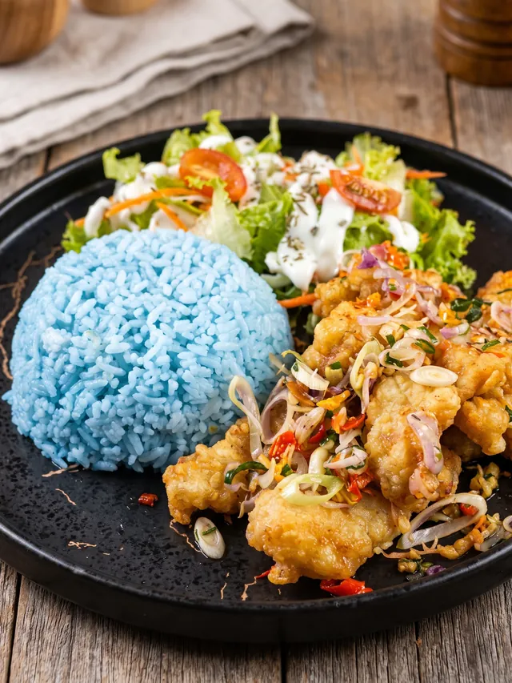
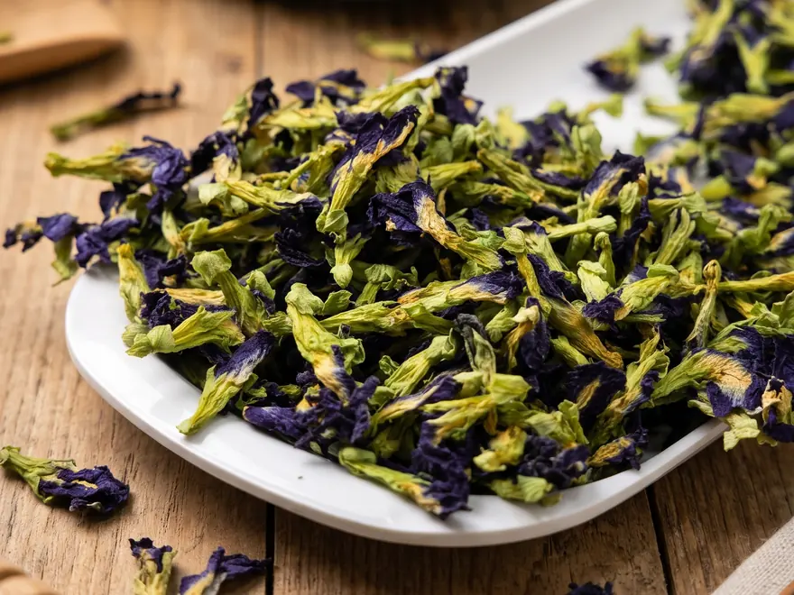

Setiap hidangan dan minuman di Telang Tualang diwarnai secara alami oleh kelopak telang. Biru yang bisa dinikmati.

Gurihnya dori berpadu dengan racikan chilli salt yang menghadirkan sensasi gurih dan sedikit pedas. Disajikan bersama nasi biru bunga telang, membawa cita rasa modern dengan sentuhan khas Telang Tualang.
Dari sekuntum bunga telang, kami menemukan inspirasi untuk menghadiri sesuatu yang berbeda. Warna biru alami menjadi ciri khas lalu kami gabungkan elemen biru ini menjadi makanan dan minuman unik dan berkhasiat.
Warna biru khas kami berasal dari bunga Telang, bukan sekedar pewarna buatan.
Tambahkan sentuhan jeruk nipis, dan warna birunya dapat berubah menjadi ungu. Keajaiban kecil dari alam !
Kami memadukan inspirasi bunga telang dengan beragam kreasi kuliner untuk menghadirkan pengalaman bersantap yang berbeda.
Mengandung antosianin, flavonoid dan senyawa fenolik yang diteliti memiliki aktivitas antioksidan.
Studi kecil pada orang sehat menunjukkan ekstrak telang menekan lonjakan gula darah dan insulin.
Alternatif alami untuk pewarna biru buatan pada makanan dan minuman.
Informasi umum berdasarkan penelitian awal, bukan klaim pengobatan.
Telang Tualang tidak hanya menyajikan hidangan berbahan telang. Kami juga menyediakan bunga telang kering grade A terbaik untuk Anda seduh atau olah sendiri.
Tanya & Pesan via WhatsApp